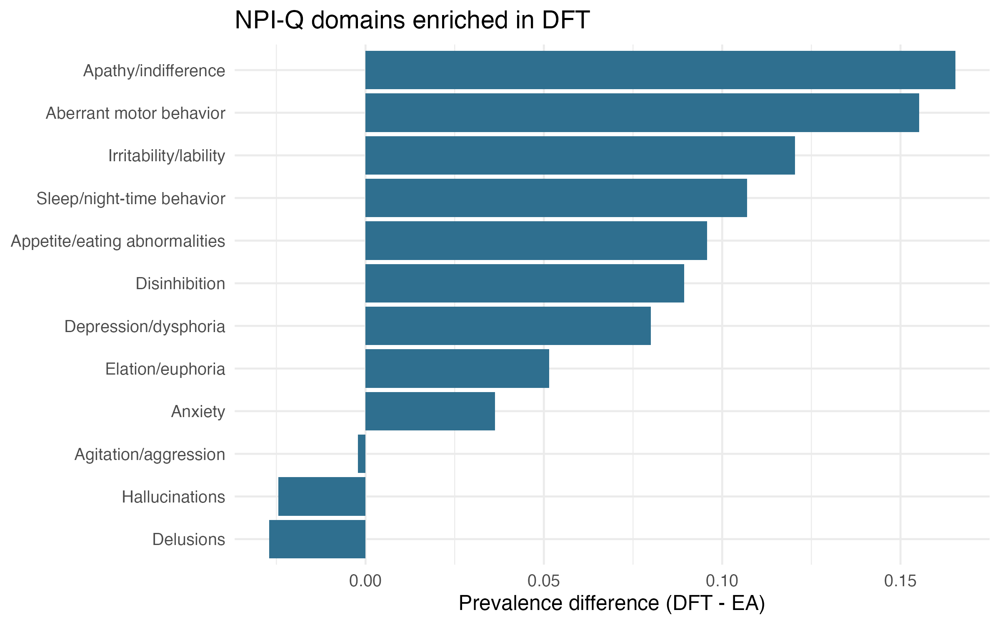
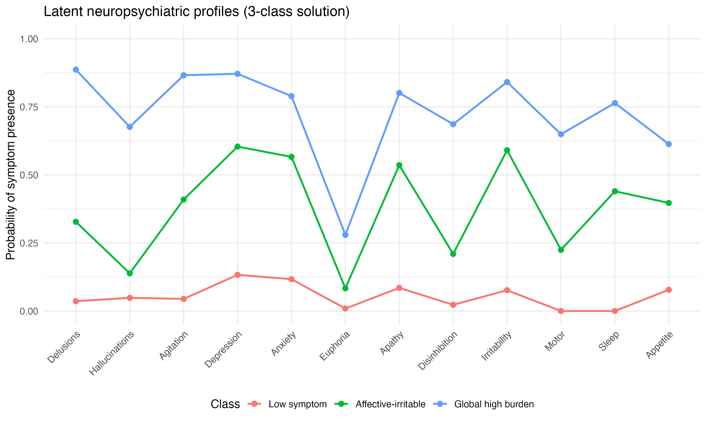
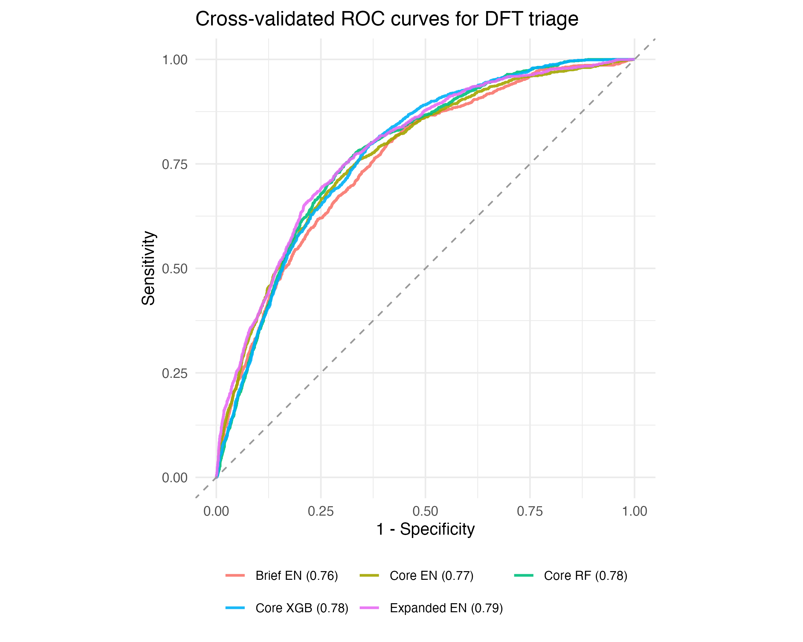
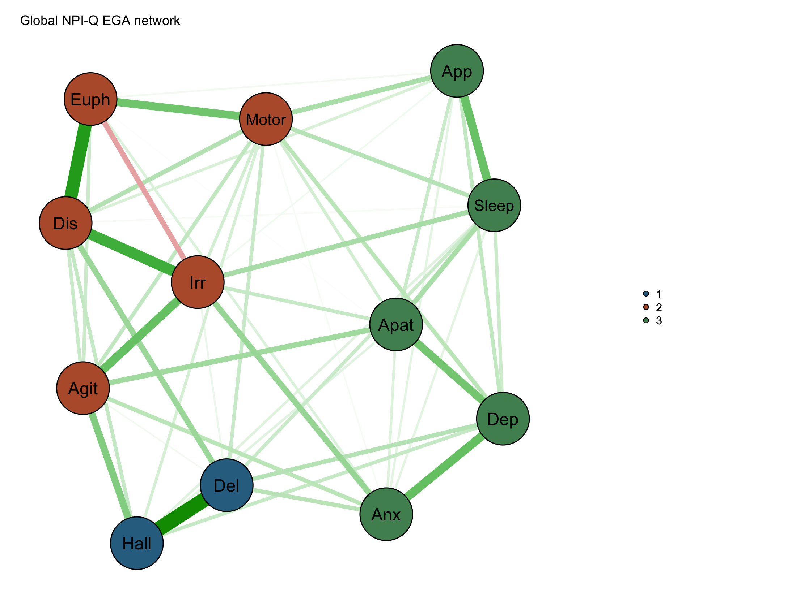
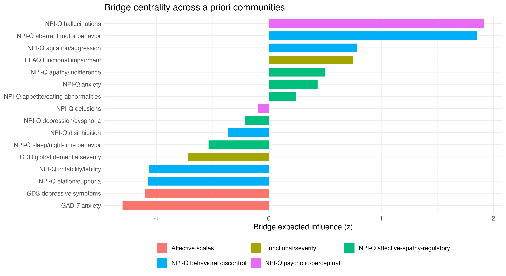

Firma neuropsiquiátrica y funcional para diferenciar DFT de EA
Pregunta central: qué síntomas NPI-Q y variables clínicas de cabecera diferencian mejor DFT de EA en una cohorte peruana de clínica de memoria.
N y muestra
- N total: 609 pacientes; EA=466 y DFT=143.
- Modelo ajustado core: n=551 con variables demográficas, funcionales y NPI-Q.
- Dominios NPI-Q codificados como presencia/ausencia y severidad 0-3.
Análisis estadístico
- Descriptivos comparativos EA vs DFT.
- Regresión logística multivariable con DFT como outcome.
- OR ajustados, IC95%, p-value y AUC aparente del modelo.
Resumen de hallazgos
En este estudio transversal de 609 pacientes con EA o DFT atendidos en una clínica de memoria, se compararon dominios NPI-Q y variables clínicas para diferenciar DFT de EA; los hallazgos principales fueron: (1) DFT presentó edad de inicio más temprana y mayor NPI-Q total; (2) apatía, trastorno motor, irritabilidad, sueño, apetito y desinhibición fueron más prevalentes en DFT; (3) trastorno motor y severidad de apatía fueron los predictores NPI-Q más consistentes en los modelos ajustados; y (4) el modelo core alcanzó AUC aparente de 0.782.

Perfiles latentes transdiagnósticos de síntomas neuropsiquiátricos
Pregunta central: si los 12 dominios NPI-Q forman subgrupos clínicos de pacientes que atraviesan el diagnóstico EA/DFT.
N y muestra
- N analítico: 609 pacientes; EA=466 y DFT=143.
- N usado en LCA: 589 casos completos para los 12 dominios NPI-Q.
- Diagnóstico y escalas clínicas se usaron solo para validación externa.
Análisis estadístico
- LCA categórica con NPI-Q dicotomizado como ausencia/presencia.
- Comparación de 1 a 6 clases con BIC, SABIC, entropía y tamaño de clase.
- Validación externa con chi-cuadrado, Kruskal-Wallis y regresión multinomial exploratoria.
Resumen de hallazgos
En este estudio transversal de 589 pacientes con EA o DFT y datos completos de NPI-Q, se realizó un análisis de clases latentes para identificar perfiles neuropsiquiátricos transdiagnósticos; los hallazgos principales fueron: (1) la solución recomendada fue de tres clases; (2) los perfiles se caracterizaron como bajo síntoma, afectivo-irritable y alta carga global; (3) las clases difirieron por diagnóstico, CDR, PFAQ, NPI total, cognición y escalas afectivas; y (4) DFT estuvo más representada en las clases sintomáticas que en la clase de bajo síntoma.

Modelo breve de triaje clínico para sospecha de DFT
Pregunta central: si variables rutinarias pueden estimar probabilidad de DFT frente a EA con rendimiento útil para triaje, no para diagnóstico automático.
N y muestra
- N total: 609 pacientes; EA=466 y DFT=143.
- Core complete-case antes de imputación: 551/609.
- Brief complete-case: 578/609; Expanded complete-case: 134/609.
Análisis estadístico
- Outcome binario: DFT=1, EA=0.
- Validación cruzada estratificada 5-fold repetida 10 veces.
- Imputación dentro de cada fold; elastic net principal y RF/XGBoost como benchmarks.
Resumen de hallazgos
En este estudio de desarrollo y validación interna de 609 pacientes con EA o DFT, se entrenaron modelos de triaje clínico para estimar probabilidad de DFT usando variables rutinarias; los hallazgos principales fueron: (1) el modelo Core elastic net alcanzó AUC media de 0.776; (2) el modelo Brief alcanzó AUC de 0.760 con menor número de variables; (3) los modelos Expanded mejoraron la discriminación pero tuvieron alto missing diferencial; y (4) el modelo principal conserva mejor balance entre rendimiento, interpretabilidad y aplicabilidad clínica.

Estructura del NPI-Q: EGA, CFA y validación clínica
Pregunta central: qué dimensiones empíricas del NPI-Q emergen en EA/DFT y si esa estructura se sostiene frente a modelos factoriales alternativos.
N y muestra
- N analítico: 609 pacientes; EA=466 y DFT=143.
- N usado para EGA/CFA NPI-Q: 589 casos completos.
- Comparación por diagnóstico: EA=453 y DFT=136 con NPI-Q completo.
Análisis estadístico
- EGA con correlaciones policóricas/auto, GLASSO y Walktrap.
- CFA ordinal WLSMV comparando modelos EGA, clínicos, literatura y RDoC exploratorio.
- Bootstrap EGA, invariancia por diagnóstico, confiabilidad y validación externa.
Resumen de hallazgos
En este estudio psicométrico transversal de 589 pacientes con EA o DFT y NPI-Q completo, se evaluó la estructura del NPI-Q mediante EGA, CFA ordinal y validación externa; los hallazgos principales fueron: (1) emergieron tres comunidades globales: psicótico-perceptual, descontrol conductual y afectivo-apático-regulatoria; (2) el modelo CFA derivado de EGA mostró excelente ajuste; (3) la invariancia por diagnóstico fue aceptable; y (4) las comunidades se asociaron con funcionalidad, severidad global y cognición.

Red de síntomas, afecto y funcionalidad usando comunidades EGA
Pregunta central: qué síntomas conectan las dimensiones NPI-Q con afecto externo, severidad y discapacidad funcional.
N y muestra
- N principal complete-case: 315 pacientes; EA=193 y DFT=122.
- Nodos principales: 12 NPI-Q, PFAQ, CDR, GAD-7 y GDS.
- Sensibilidad robusta: 589 casos con NPI-Q, PFAQ y CDR.
Análisis estadístico
- Red EBICglasso con correlaciones polychoric-auto y gamma=0.50.
- Bridge centrality con comunidades EGA del NPI-Q más dominios externos.
- Bootstrap de estabilidad, sensibilidad y Network Comparison Test EA vs DFT.
Resumen de hallazgos
En este estudio transversal de red de 315 pacientes con EA o DFT y datos completos de NPI-Q, PFAQ, CDR, GAD-7 y GDS, se estimó una red de síntomas para identificar nodos centrales y puente entre dominios clínicos; los hallazgos principales fueron: (1) las asociaciones más fuertes fueron GAD-7-GDS, PFAQ-CDR, delirios-alucinaciones, desinhibición-irritabilidad y euforia-desinhibición; (2) alucinaciones, trastorno motor, agitación, PFAQ, apatía y ansiedad NPI-Q fueron los principales nodos puente; (3) la sensibilidad con 589 pacientes preservó los principales enlaces clínicos; y (4) la comparación exploratoria EA vs DFT no mostró diferencias globales significativas de estructura ni fuerza de red.
